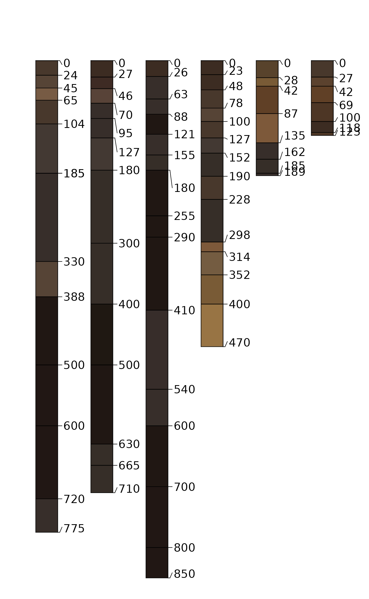
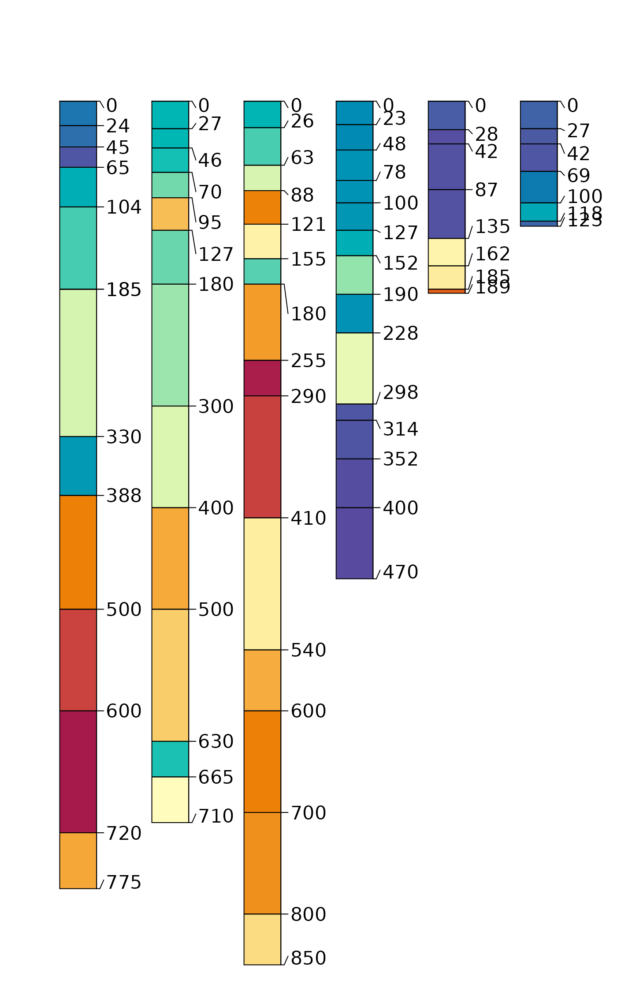
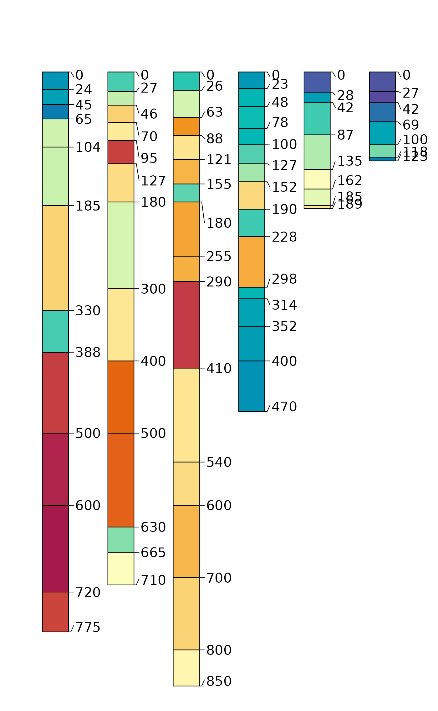
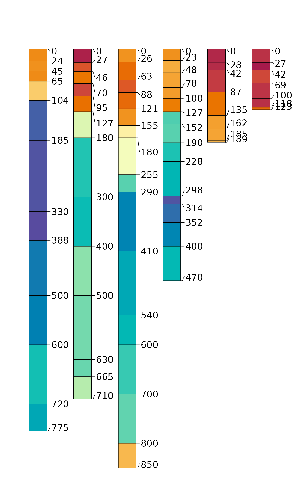

Soil Physical and Chemical Data from Manganiferous Soils (Bourgault and Rabenhorst, 2011)
Format
A data frame with 30 observations on the following 13 variables.
- id
pedon name
- name
horizon designation
- top
horizon top boundary in cm
- bottom
horizon bottom boundary in cm
- color
moist soil color in Munsell notation
- texture
USDA soil texture class
- sand
sand content by weight percentage
- silt
silt content by weight percentage
- clay
clay content by weight percentage
- Fe
DCB-extracted Fe in g/kg (see citation)
- Mn
DCB-extracted Mn in g/kg (see citation)
- C
total organic carbon as g/kg
- pH
measured in 1:1 H20 slurry
- Db
bulk density (g/cc), clod method
References
Rebecca R. Bourgault, Martin C. Rabenhorst. 2011. Genesis and characterization of manganiferous soils in the Eastern Piedmont, USA. Geoderma. 165:84-94.
Examples
# setup environment
library(aqp)
data(sp6)
# init SPC
depths(sp6) <- id ~ top + bottom
# convert non-standard Munsell colors
sp6$soil_color <- getClosestMunsellChip(sp6$color)
# profile sketches
par(mar=c(0,0,3,0))
plot(sp6, color='soil_color')
#> [A-1:12] horizon with top == bottom, cannot fix horizon depth overlap
#> consider using repairMissingHzDepths()

plot(sp6, color='Mn')
#> [A-1:12] horizon with top == bottom, cannot fix horizon depth overlap
#> consider using repairMissingHzDepths()

plot(sp6, color='Fe')
#> [A-1:12] horizon with top == bottom, cannot fix horizon depth overlap
#> consider using repairMissingHzDepths()

plot(sp6, color='pH')
#> [A-1:12] horizon with top == bottom, cannot fix horizon depth overlap
#> consider using repairMissingHzDepths()

plot(sp6, color='texture')
#> [A-1:12] horizon with top == bottom, cannot fix horizon depth overlap
#> consider using repairMissingHzDepths()